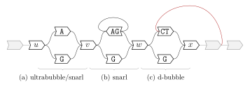

Introduction
BubbleFinder identifies potential sites of genetic variation in pangenome graphs. It reads an existing graph in GFA or GBZ format and reports the boundaries of regions with alternative sequences.
See Getting started for installation and an example.

u and v, and differ at one base: A or G. Arrow-shaped nodes show sequence orientation. A path can follow links in either direction, but must leave each node through the opposite end from which it entered.Bubble types
| Fig. 1 | Command | Regions to look for |
|---|---|---|
| (a) | ultrabubbles | Regions without loops or branches ending inside them. |
| (b) | snarls | Regions that also allow loops or branches ending inside them. |
| (c) | d-bubbles | Regions that allow links between internal nodes and nodes outside their boundaries. |
| — | superbubbles | Regions with one entrance, one exit and no internal loops in a directed sequence graph. |
Definitions: Onodera et al., 2013 (superbubbles), Paten et al., 2017 (snarls and ultrabubbles), and Sena et al., forthcoming (d-bubbles).
Algorithms
We developed algorithms for finding these regions efficiently. The commands snarls, superbubbles and ultrabubbles --spqr-weak-superbubbles use a unified SPQR-tree framework (Sena et al., 2026), built with our SPQR-Rust library. SPQR trees split the pangenome graph into smaller parts, making bubbles easier to find (Di Battista and Tamassia, 1990).
We also defined d-bubbles using dominator trees. See their definition and coverage. Other methods for computing ultrabubbles are described in the documentation.
BubbleFinder can also export ultrabubble nesting hierarchies and SPQR-tree decompositions.
Validation
BubbleFinder has been tested on real and synthetic graphs. The papers below describe the experiments and provide correctness proofs for the algorithms. Additional tests are described on the Validation wiki.
Publications
- Sena, Politov, Moumard, Cairo, Rizzi, Cáceres, Schmidt, Harviainen and Tomescu (2026). Identifying bubble-like subgraphs in linear-time via a unified SPQR-tree framework. arXiv:2604.08071.
- Harviainen et al. (2026). Scalable Computation of Ultrabubbles in Pangenomes by Orienting Bidirected Graphs. Bioinformatics.
- Sena, Moumard, Harviainen, Russo and Tomescu. Dominator-bubbles: variation structures beyond separability in pangenome graphs. Preprint forthcoming.